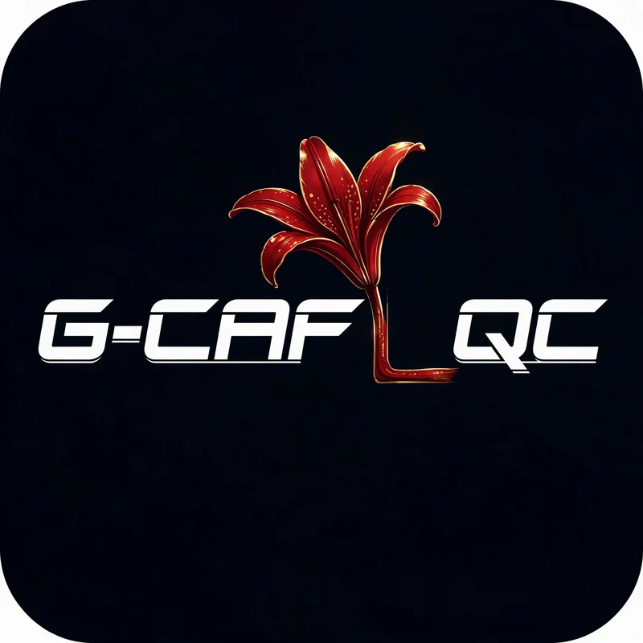

G-CAFL-QC Builder
Winning icon concept — the lily is the L: one baseline, one wordmark, G-CAF[lily]QC. Concept artwork for the author’s final vector redraw.

POMEGRANATE × LILY · Freedom Arkives
G-CAFL-QC Framework™ © 2026 Christopher Turner. All Rights Reserved.
Download icon (.webp)